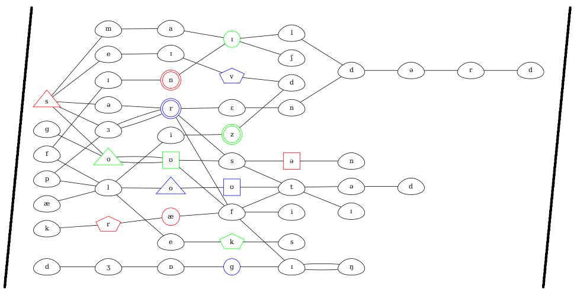

In The Talking Tree, solvers are presented with a number of sentences, and a number of syntax trees to go with them.
Most of the labels and words in these syntax trees are masked, but placeholders are provided for one word in each, indicating that they’re the ones to pay attention to. Each sentence has its own unique structure, so one word from each sentence can be identified. There are a number of notations for parsing syntax, each with its own peculiarities (the labels are all blanked out to sidestep this issue). With some linguistic knowledge, it should be easy enough to identify which sentences map to each tree, though this can be done through trial and error (and by counting sentence length) even with no linguistic training.
The next step is to notice that the number of spaces left blank for the word in each tree matches does not match the number of letters, but the number of phonemes. A clue for this is that words are enclosed between slashes, which is a common convention in transcription, one that solvers are hopefully familiar with from either dictionaries or other online sources such as Wikipedia. Transcriptions for most of these words can be found in online sources.
| Sentence | Keyword transcription |
| Everywhere Alex walks the dog chases them. | /æleks/ |
| Right while I was surfing the internet dropped. | /sɜrfiŋ/ |
| Each horse raced past the finish line fell. | /fɪnɪʃ/ |
| No person pushed quickly through the door fell. | /pɜrsən/ |
| Crafty people who hunt duck out on weekends. | /kræftɪ/ |
| A young child walked through the park smiled. | /smaɪld/ |
| Some florists sent the flowers were pleased. | /plizd/ |
| The raft floating down the river sank. | /floʊtəd/ |
| Places Alex ran around jogging closed today. | /dʒɒgɪŋ/ |
| Eccentric people chased around the block surrendered. | /sərɛndərd/ |
| Eerie ghost haunts scared those who visited. | /goʊst/ |
| Nice people returned to their houses were saved. | /seɪvd/ |
| Sophie gave the child a dog bit a bandaid. | /soʊfi/ |
The same slashes appear either side of the provided graph, directing solvers to fill in words left to right, one phoneme to each node. There are a few ways in here, the most straightforward of which is looking at the number of words which start with the same sounds, then words that have common second sounds, and so on.
The colored nodes can be ordered by color (red, green, then blue), then by the number of sides it has (circle, double circle, triangle, etc), to yield /ænsərɪzoʊkgroʊv/, or ANSWER IS OAK GROVE.